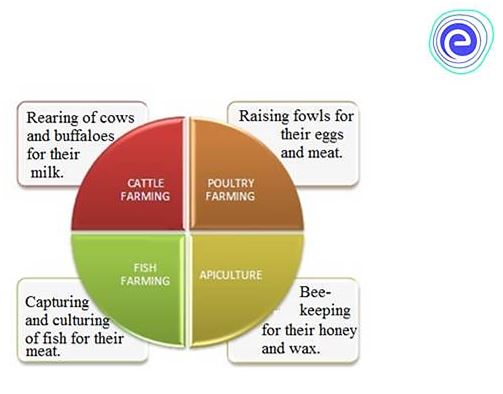

Types of Animal Husbandry
There are mainly four types of animal husbandry practices depending on the type of animal. Continue reading to know
more about these practices:
-
Cattle Farming: This type of farming involves taking care of cattle like cows, buffaloes, goats, and
sheep for the production of milk or agricultural activities like irrigation, ploughing, etc. These animals
are reared and managed by mostly farmers to increase their income. The animals which provide milk are called
milch animals. Milk is further used to make many dairy products like curd, cheese, cream, butter, etc. These
products are manufactured industrially and used for commercial purposes. We also get meat from some cattle.
Animals in these farms are provided with shelter, healthy food, health check-up by doctors, etc.
-
Poultry Farming: The term ‘Poultry’ means rearing domesticated birds for food (meat) or their eggs,
for example, chicken, ducks, geese, turkeys and some varieties of pigeons. Poultry birds reared for meat are
called broilers, while the female birds raised for egg production are called layers.
Poultry has emerged as one of the biggest industries in India, thus providing good income opportunities for
farmers and employment for many others. However, this industry requires regular maintenance of sanitation
and hygiene.
-
Fish Farming: Rearing of fish in tanks or ponds commercially is known as fish farming or
pisciculture. Fishes and some other marine animals are good sources of protein. Hence, there is a huge
demand for these. Fishing can be done in two ways, natural resources, and artificial farming. Natural
resources such as the sea, lakes, rivers, etc., provide a wide range of fisheries. Common fish species like
salmon, tuna, catfish, trout, tilapia, etc., are raised in fish farms.
Fish farming or pisciculture is of two types:
- Extensive aquaculture, based on the local photosynthetic production
- Intensive aquaculture, based on the external food supply given to fishes.
-
Bee Farming: Bee farming involves rearing honey bees in artificial hives for the production of honey
on a large scale. Bee farming is also called apiculture. The area used for keeping bees is known as an
apiary or a bee yard. Bees are reared for honey and beeswax. They are also used as pollinators for flowers.
Honey is for a wide range of purposes like medicine, food, beauty products, etc. Hence, apiculture is also
one of the important industries.
